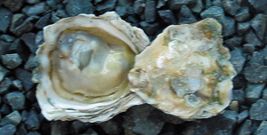
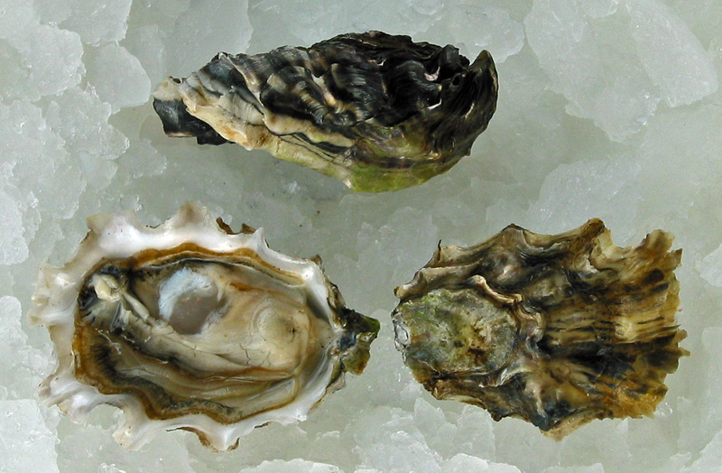
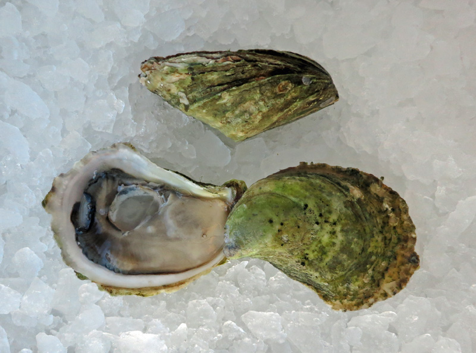
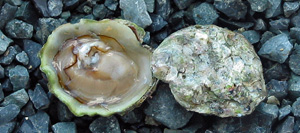
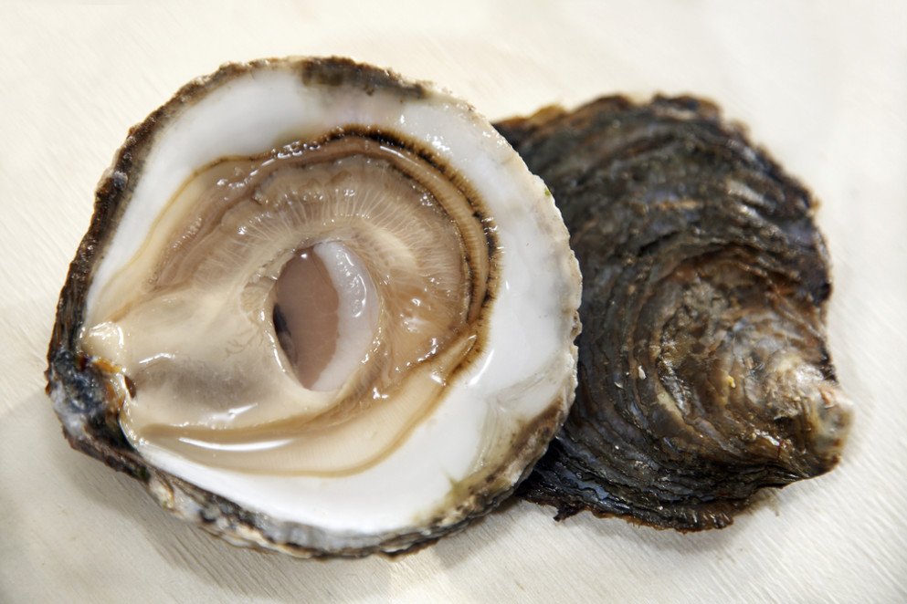

I'm a huge fan of oysters. However, I don't consider myself a connoisseur. I'm just a foodie and oysters just so happens to be somewhere around the top of my list of favorite foods. Yes, a part of me would have to agree that it probably is an acquired taste but it could also be that some people just haven't had the right type of oysters. Here, I'll go though a little of the basics.
Oyster Types
There are over 100 varieties of oyster. That's a lot! However, they all stem from 5 main types.
Kumamoto
Pacific
Atlantic
Olympia
European Flats
Images
Kumamoto Oyster

Kumamotos, sometimes called Kumis or Kumos are relatively small oysters. They have a creamy texture and a mild sweet flavor. Pacific Oyster

Pacific oysters are sweeter and have less of a briny flavor compared to Atlantic oysters. However, they do have a wide flavor spectrum. Atlantic Oyster

Atlantic oysters are much more brinier in taste compared to other oyster. These also have a crisp and firm texture with a clean finish. Olympia Oyster

The Olympia oysters are the smallest. The flavor profile is described as a sweet celery with a metallic finish. The texture of these is creamy like Kumamotos. European Flat

European flats are not for the novice oyster eaters. These have a firm and crunchy texture and intense mineral flavors with hints of seaweed and a gamey finish.